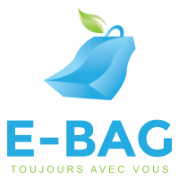

Mes projets
E-Bag est la compagnie que j’ai co-fondée au printemps 2020. En effet, le projet ayant débuté dans le cadre de la compétition aux Jeux de Génie 2020. Nous avons décidé de poursuivre le projet par la suite. Pour ma part, j'ai pris le rôle de CTO. Mes responsabilités étaient de m'assurer du développement du produit (principalement au niveau TI), le développement marketing de la compagnie, la vente et la gestion de l’entreprise avec notre CEO et COO.
Qu'est-ce que E-Bag:
E-Bag est une jeune entreprise basée à Montréal qui développe un système de consigne de sacs réutilisables. En effet, grâce au nuage nous avons développé une plateforme qui permet d’emprunter des sacs réutilisables d’une de nos bornes de distributions. Nous offrons donc un système simple d’utilisation et agréable à utiliser pour que vous n’ayez plus jamais à acheter de sacs pour faire vos courses.
E-Bag a eu 2 grandes étapes dans son développement:
Premièrement, le développement de E-Bag dans le cadre des Jeux de Génie 2020. Cette phase nous a permis de développer l'idée d’E-Bag et la base du projet. Plus précisément nous avons dû:
Deuxièmement, le développement de E-Bag en tant que jeune entreprise et comme entreprise en résidence au Centech . Lors de cette étape, nous avons dû commercialiser notre produit ainsi que faire son développement pour qu'il devienne un service viable au niveau technique et économique.
De plus, E-Bag fut un projet d'étude à l'été 2020 pour mon baccalauréat. En effet, dans le cadre de ce projet, l’objectif était de développer un système sur le nuage AWS qui permettra de soutenir le service que E-Bag offre à sa clientèle. Plus précisément, je devrais créer un système qui sera en mesure de gérer les utilisateurs, les sacs, les abonnements et les paiements d’abonnement pour E-Bag. Le tout devra être développé en microservice et basé sur une architecture REST. Il faudra finalement développer le site web qui permettra à l’utilisateur de consulter l’état de leur compte et différentes statistiques reliées à ce dernier.
Voici 2 articles qui parlent de notre projet:
Les Affaires
ETS-360